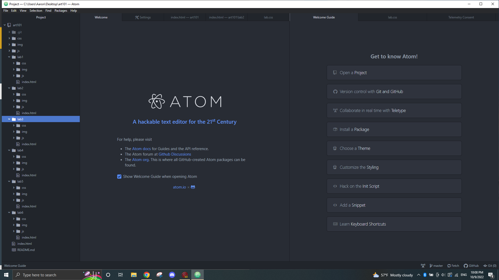
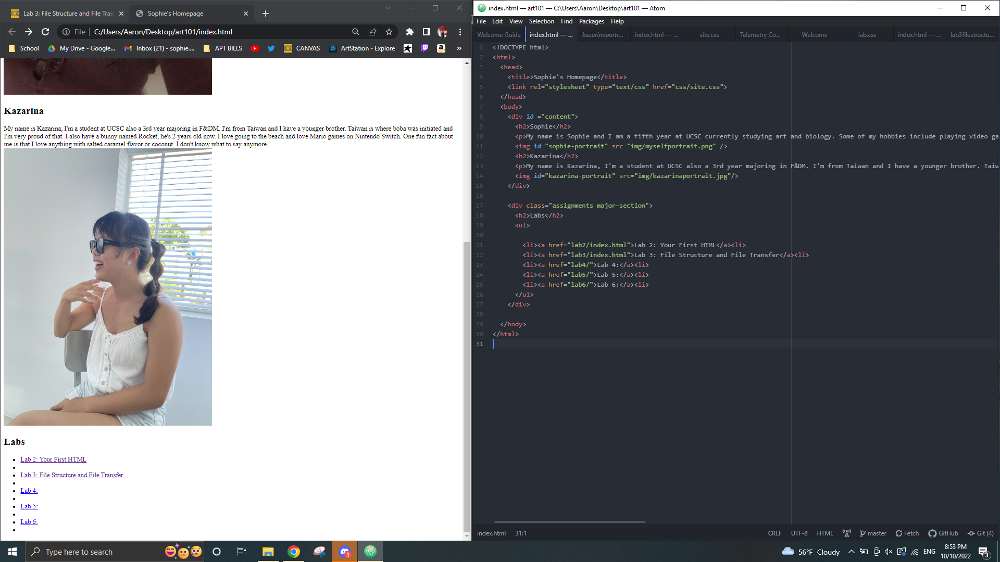
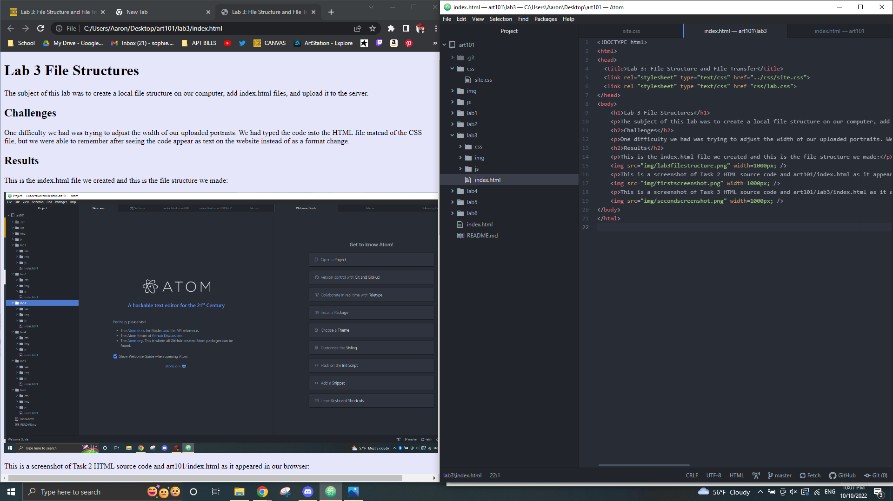

The subject of this lab was to create a local file structure on our computer, add index.html files, and upload it to the server.
One difficulty we had was trying to adjust the width of our uploaded portraits. We had typed the code into the HTML file instead of the CSS file, but we were able to remember after seeing the code appear as text on the website instead of as a format change.
This is the index.html file we created and this is the file structure we made:
This is a screenshot of Task 2 HTML source code and art101/index.html as it appeared in our browser:
This is a screenshot of Task 3 HTML source code and art101/lab3/index.html as it appeared in our browser:
